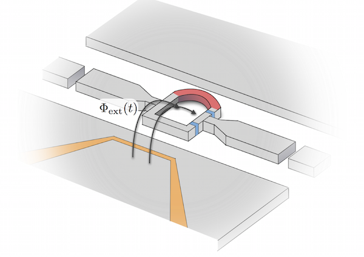

NQDL Nonlinear Quantum Dynamics Lab
About Us
The nonlinear quantum dynamics lab is housed on the Korea University science campus in the Department of Physics. Our goal is to explore the fundamental dynamics of quantum mechanical systems with an emphasis on understanding and making use of their nonlinear properties.
At present, our work focuses on superconducting circuit devices, with attention on optomechanical systems, as well as numerical methods used in quantum optics and related systems. In addition, we occasionally find ourselves working on interdisciplinary research topics, such as photon production from black holes.
Address
Korea UniversityDepartment of Physics
Anam-dong 5, Seongbuk-gu
Seoul 136-713, South Korea
P: +82-02-3290-3092
Email Us
Who We Are
Paul Nation is a theoretical physicist working on a multitude of quantum physics related topics such superconducting circuit devices, quantum optics, and computational methods for solving quantum dynamics. He received his B.S. (2005) from Utah State University and Ph.D. (2010) from Dartmouth College. He has held postdoctoral positions at the RIKEN Advanced Science Institute in Tokyo, and the University of Michigan - Ann Arbor.
⇒ Curriculum VitaeWhat We Do
Optomechanics
Generating non-classical states of macroscopic objects has been a long standing goal for quantum physicists, as it would help to better understand how the classical world emerges from the underlying quantum dynamics. Optomechanical systems, where a single mode of a mechanical harmonic oscillator interacts with a electromagnetic cavity mode, are ideal systems in which to investigate this question. We are interested in superconducting circuit realizations of these optomechanical systems, with a particular emphasis on systems comprising superconducting quantum interference devices (SQUIDs), where the magnetic-flux tunability of the SQUIDs can be used to help generate nonlinear interactions and non-classical states.
Numerical Quantum Dynamics
Although a considerable amount of effort has gone into achieving a viable quantum computer, to date, this goal remains elusive. Without a quantum computer in the foreseeable future, the efficient simulation of quantum dynamics on classical computers is a key element in the quantum physicists toolbox. At the NQDL, we are busy creating the first new simulation software in the last ten years for quantum optics and related fields. This software, QuTiP: Quantum Toolbox in Python, is developed jointly with Dr. Robert Johansson at RIKEN in Japan, and is now the predominate software used in the simulation of these systems.
Black Hole Radiation

In 1974, Hawking made the profound discovery that black holes are not truly black, but emit thermal radiation with a temperature inversely proportional to the black hole's mass. Even more surprising, the mechanism by which these photons are created is identical to the parametric generation of photons in quantum optics and circuit-QED devices, just to name a few. Using this connection, we aim to explore the emission of Hawking radiation from the standpoint of parametric amplification. Furthermore, in making use of conformal symmetry near the black hole's horizon, we have been able to apply Landauer transport theory to better understand the remarkable properties inherent in black holes and their radiation.